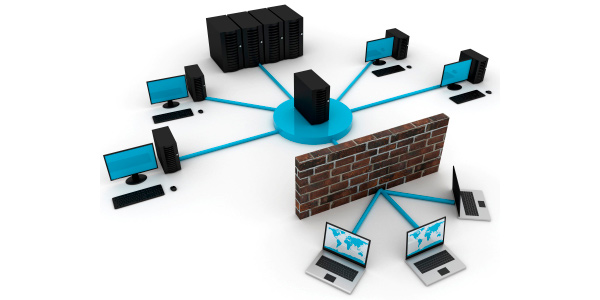
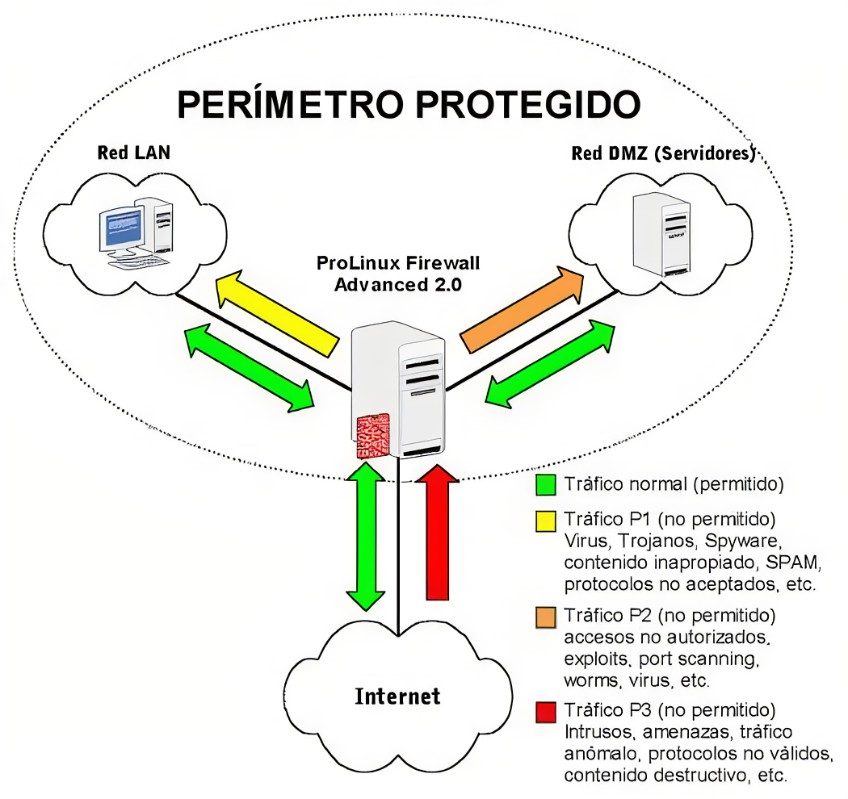

El modelo de seguridad perimetral opera bajo la premisa de "confianza dentro, desconfianza fuera". Se centra en construir una barrera fortificada alrededor de la red de una organización, similar a un foso alrededor de un castillo. Una vez que un usuario o dispositivo atraviesa este perímetro, esencialmente se le otorga acceso completo a los recursos internos, como aplicaciones y datos. Esta estrategia prioriza la defensa del punto de entrada, invirtiendo fuertemente en herramientas como firewalls, sistemas de detección y prevención de intrusos para repeler amenazas externas. Sin embargo, una vez dentro, la libertad de movimiento facilita la propagación de amenazas internas, fugas de datos y ataques originados por usuarios malintencionados o comprometidos.
La seguridad perimetral tradicional se basa en la idea de un límite claramente definido entre la red interna y el mundo exterior. Este perímetro se refuerza con diversas tecnologías de seguridad que inspeccionan y filtran el tráfico entrante y saliente. El objetivo es bloquear cualquier acceso no autorizado desde fuera, protegiendo así los activos internos. Aunque este modelo ha sido la norma durante mucho tiempo, su eficacia se ha visto desafiada por la creciente adopción de la nube, el trabajo remoto y la proliferación de dispositivos móviles, lo que ha difuminado las líneas del perímetro tradicional.
A pesar de la evolución del panorama tecnológico, la seguridad perimetral sigue siendo un componente importante de la estrategia de ciberseguridad. Si bien el concepto de "perímetro" ya no se limita a un límite físico, la necesidad de controlar el acceso a los recursos, independientemente de la ubicación, persiste. La seguridad perimetral moderna debe adaptarse a la nueva realidad, incorporando estrategias para proteger datos y aplicaciones en la nube, dispositivos móviles y entornos de trabajo híbridos, manteniendo la vigilancia en los puntos de conexión entre la organización y el mundo exterior.
La seguridad perimetral se compone de diversas tecnologías que trabajan en conjunto para proteger los activos de una organización frente a amenazas externas. A continuación, exploramos algunos de los componentes más fundamentales en una estrategia de seguridad perimetral moderna.
Es el proceso por el cual dispositivos de red como routers dirigen el tráfico entre redes. En redes seguras, su función es garantizar que los paquetes de datos lleguen únicamente a sus destinos legítimos. Una configuración adecuada de las tablas y políticas de enrutamiento es esencial para prevenir el envío de datos a destinos no autorizados, evitando así posibles intercepciones maliciosas.
El NAT (Network Address Translation) Oculta las direcciones IP internas de una red, traduciéndolas a una IP pública para el tráfico saliente,añadiendo seguridad al dificultar el acceso de atacantes externos a los dispositivos internos. Por su parte, el DHCP (Dynamic Host Configuration Protocol), aunque es una función básica, puede reforzar la seguridad perimetral mediante medidas como limitar el rango de IPs, mitigar ataques de suplantación o reservar IPs específicas para dispositivos críticos, garantizando que solo equipos autorizados accedan a la red.
Es una técnica de gestión de tráfico en redes que prioriza ciertos tipos de tráfico, como el de aplicaciones críticas, sobre otros. En seguridad perimetral, ayuda a prevenir que el tráfico malicioso o no deseado consuma el ancho de banda, protegiendo el rendimiento y la seguridad de aplicaciones clave.
Las VPN extienden el perímetro de seguridad a usuarios y oficinas remotas al permitir un acceso seguro a la red interna de la empresa. Lo logran mediante el cifrado de conexiones, creando un túnel seguro sobre internet que protege la confidencialidad e integridad de los datos frente a ataques de interceptación.
Un firewall con estado filtra el tráfico según reglas predeterminadas y manteniendo un registro de los estados de las conexiones activas. Esto le permite tomar decisiones más inteligentes y contextuales sobre el tráfico, siendo más efectivo que los firewalls basados únicamente en reglas, ya que puede detectar comportamientos anormales o maliciosos.
Los sistemas de prevención de intrusos (IPS) detectan ataques en tiempo real y toman medidas automatizadas para detenerlos. Pueden bloquear tráfico malicioso, desconectar sesiones sospechosas o reconfigurar dispositivos de red para contener amenazas. Frecuentemente se integran con firewalls para proporcionar una defensa más completa.
Analiza el comportamiento de los archivos en tiempo real, realiza análisis retrospectivos y detecta patrones irregulares para defenderse contra malware avanzado y amenazas persistentes avanzadas (APTs). Por otro lado, el Anti-Spam filtra correos electrónicos no deseados o maliciosos, bloqueando mensajes con enlaces de phishing o archivos infectados antes de que lleguen a los usuarios, reduciendo riesgos como el robo de credenciales o ataques de ransomware.
El control de aplicaciones permite a las organizaciones gestionar qué aplicaciones pueden ejecutarse en su red, bloqueando o limitando las que representen riesgos de seguridad. Esto protege contra aplicaciones maliciosas o no autorizadas que podrían ser usadas como vectores de ataque sin el conocimiento del equipo de seguridad.
Las herramientas de filtrado de URL, DNS y video bloquean el acceso a sitios web o servicios peligrosos que pueden ser utilizados para phishing o distribuir malware. Estas soluciones filtran las solicitudes de red mediante listas negras, categorizaciones de riesgo y análisis de contenido, evitando que los usuarios accedan a contenido malicioso. También ayudan a controlar el uso inadecuado de internet y gestionar el ancho de banda.
Las redes perimetrales optimizan la infraestructura de red al reducir la latencia y aumentar las velocidades de transmisión, adoptando un modelo distribuido que balancea la carga de tareas informáticas entre diversos activos. En este modelo, el núcleo central de la red perimetral se asemeja al centro de un átomo, mientras que los endpoints (o nodos) en los extremos de la red son como los átomos de una molécula, donde se encuentran los dispositivos perimetrales que vinculan redes o realizan diversas funciones de procesamiento.
La combinación de redes distribuidas con hardware de computación perimetral mejora el rendimiento y reduce la latencia, creando una sinergia que maximiza la eficiencia.
Una de las formas en que las organizaciones controlan el acceso en el modelo perimetral es mediante redes privadas virtuales (VPN). Las VPN establecen una conexión encriptada entre los usuarios, generalmente remotos, y un servidor VPN. Dependiendo del nivel de acceso, los usuarios deben conectarse a la VPN para acceder a los recursos necesarios.
Dado que los usuarios de una misma empresa suelen tener diferentes privilegios de acceso, los equipos de TI configuran varias VPN. Cada VPN proporciona un nivel de acceso distinto, similar a un "castillo" con un nivel de seguridad diferente.
Aunque los centros de datos a hiperescala permiten una mayor escalabilidad para las empresas, siguen siendo susceptibles a los mismos problemas de capacidad que los centros de datos tradicionales, lo que puede afectar la velocidad de transmisión de datos a medida que manejan más carga.
El principal problema del enfoque perimetral es su ineficacia en el panorama actual de la informática distribuida y la nube. Con los datos dispersos en múltiples ubicaciones y no centralizados en una red local, la defensa del perímetro se vuelve insuficiente, ya que no protege los activos fuera de él. Además, incluso si los datos se mantienen localmente, el modelo perimetral sigue siendo vulnerable. Su mayor debilidad radica en que una vez traspasado el perímetro, el atacante tiene acceso prácticamente irrestricto a los recursos internos. Esto ocurre porque el modelo confía implícitamente en los usuarios dentro del perímetro, ignorando la posibilidad de amenazas internas o usuarios comprometidos. Aunque firewalls y otros sistemas de seguridad pueden mitigar algunos riesgos, una brecha exitosa puede tener consecuencias devastadoras.